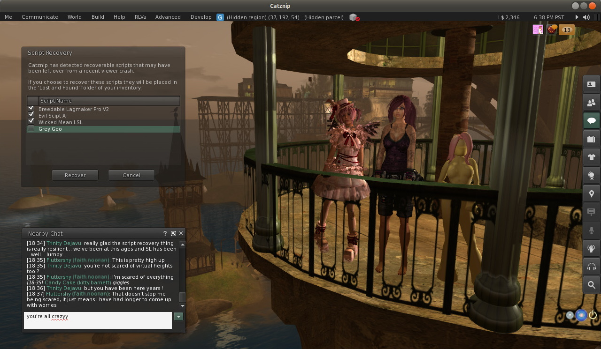

Catznip R5

Catznip R5 is a little overdue and initially started out as a maintenance release, but you know how these things go, poke this , poke that, add something here, ranting screaming fit there …
Very proud to present Catznip Script Recovery. Ever crash or get logged out while editing a script and then loose all your work?
Following a crash or forced disconnect you’re now presented with a dialog offering to recover the scripts you had open.
This works for all scripts, everywhere, and as we found out while trying to take the screenshot for this release, is very robust and persistent. It wont go away till you either recover or dismiss it .. even if you crash.
Ongoing, this pushes some more of of the work done with chat. There is now a right click context menu that allows you to switch between a single and re-sizable multi-line chat bar on the fly as well as making it easy to globally change the chat font size, the spell checker also got a lot of attention in perpetration for submission to the official client. There is a lot more to come in this area and feedback is greatly appreciated.
Group moderators get a bonus this release, you can now eject a user by opening the participants list and using the right click context menu. No more opening the group floater, waiting, searching for the user name, waiting, waiting. Just, click, click, bye bye jerkface.
RLVa got a well needed service with a number of FUI and location based bugs getting squished, SharedWear was also enabled by default. You no longer need to bother with folders naming attachment points for things you place in an #RLV Folder, it just works. On related note, this release also includes the Lab’s fix for RenderResolutionDivisor, so things that make your vision fuzzy now function as they should.
Fans of a more classic interface and anyone with limited screen real estate will love the new Mini Location Bar and ability to remove the Buy L$ and Marketplace buttons. Just right click the top status bar.
Highlights
- Script Recovery : Never loose a script you were working on because the viewer crashed or you got logged out. works with all scripts, everywhere. Open scripts are auto-saved locally every 60 seconds. In event of viewer crash, scripts are presented to the user and optionally recovered to lost & found folder.
- Chat Enhancements : A big push with some our chat overhaul features.
- Eject from Group : Option on the group participant context menu to eject someone from a group, remove unwanted members without needing to open the group floater and search.
- Inline Spell Checker : As part of the work required for submitting the Catznip Spell Checker to Linden Lab for inclusion in the official client it has been rewritten from scratch. On the way a LOT of refinements and bug fixes.
Script Recovery
Never loose a script you were working on because the viewer crashed or you got logged out. works with all scripts, everywhere.
- added : Open scripts are auto-saved locally every 60 seconds. In event of viewer crash, scripts are presented to the user and optionally recovered to lost & found folder.
- backup copy is only saved when the editor isn’t pristine
- backup copy is removed when the asset was successfully uploaded, or when the floater is closed
Chat Enhancements
A big push with some our chat overhaul features.
- added : allow resizing of the multi-line nearby chat bar (hover the mouse between the chat history and chat bar)
- added : context menu for the nearby chat floater (allows changing the chat font size and the nearby chat bar type)
- added : “Show Blocked Chat” option to the nearby chat floater context menu
- added : “NearbyToastOffset” to control the offset of the nearby chat toast from the bottom of the screen
- fixed : multi-line text editor doesn’t follow the ‘ChatFontSize’ setting
- fixed : single-line chat bar extends past the right side of the nearby chat floater
- fixed : nearby chat floater’s position and size aren’t restored if it’s attached to the conversations floater
- fixed : “Nearby Chat” tab in the conversations floater isn’t removed when toggling ‘NearbyChatFloaterBarType’ or ‘NearbyChatFloaterWindow’
Status Bar
Cleaned up and tightened top status bar, especially useful if you prefer a minimalist UI or just run the viewer with limited screen real estate (like on Kitty’s fancy ION netbook. Funny .. I’ve had a netbook 2 years now, but the moment Kitty gets one it’s suddenly important .. mutter mutter mumble).
- added : “Show Buy Currency Button” and “Show Marketplace Button” context menu items to selectively show/hide those buttons on the status bar
- changed : mini-location bar dynamically resizes when the menu bar or status bar sizes change
- changed : rearranged the mini-location bar
- removed the info button
- show the maturity rating as an icon rather than part of the parcel text
- reformat the parcel text to “Region (Coordinates) – Parcel”
- coordinates and properties are always visible, regardless of navigation bar options
Spell Checker
- added : ‘Second Life glossary’ dictionary (enabled by default)
- fixed : overwriting existing text won’t trigger a new spell check
- fixed : opening an existing modifiable notecard doesn’t always show existing misspellings
- fixed : scrolling through a notecard can hide all misspellings
- fixed : squiggly lines aren’t centered on the misspelled word (fixed for LLTextEditor)
Misc
- added : “Eject from Group” option on the group participant context menu
- added : drag-moving of the current selection in a text editor control
- added : (select) notifications can be (optionally) logged to chat and/or instant message
- added : show “XXX is offline” when opening a new IM session to a friend who’s currently offline
- added : “NameTagShowTyping” setting to show an avatar’s typing status in their name tag
- changed : large address aware
- changed : “Restart Region” button to a flyout button with 2, 5 and 15 minute restart delay options
- changed : moved the “Empty Trash” option to the position “Empty Lost & Found” previously had
- changed : removed “Empty Lost & Found” from the inventory context menu and the inventory gear menu
- changed : reorganized the General preferences tab
- fixed : shift-selecting text in a notecard doesn’t actually select any text
- fixed : re-enable drag-and-drop commit behavior for main inventory panel, IM container floater, people sidebar panel and avatar picker floater
- fixed : re-enable dragging and dropping between inventory tabs
- fixed : the “PaymentSent” notification isn’t logged
- fixed : don’t log persisted notifications multiple times
- internal : trolling Trinity by messing with GCC, just for fun.
- internal : changed unknown L$ balance from L$20,000,000 to L$-1 after Coffee claimed I owed her $78,000 US.
RLVa & SharedWear
Aside from some pretty major FUI related bug fixes to RLVa, the big change here is SharedWear being on by default. SharedWear means that items placed inside a #RLV Folder do not need to be placed in attachment point named folders.
- changed : flipped “RLVaEnableSharedWear” on by default
- fixed : disabling a toolbar button doesn’t block the button’s commit signal
- fixed : LLFloaterReg::toggleInstanceOrBringToFront() bypasses the blocked folder list and the validation signal
- fixed : region “alerts” aren’t show location or show names filtered
- fixed : various issues and enhancements relating to @showloc
- fixed : the RLV API renames “Avatar Center” to “Root”